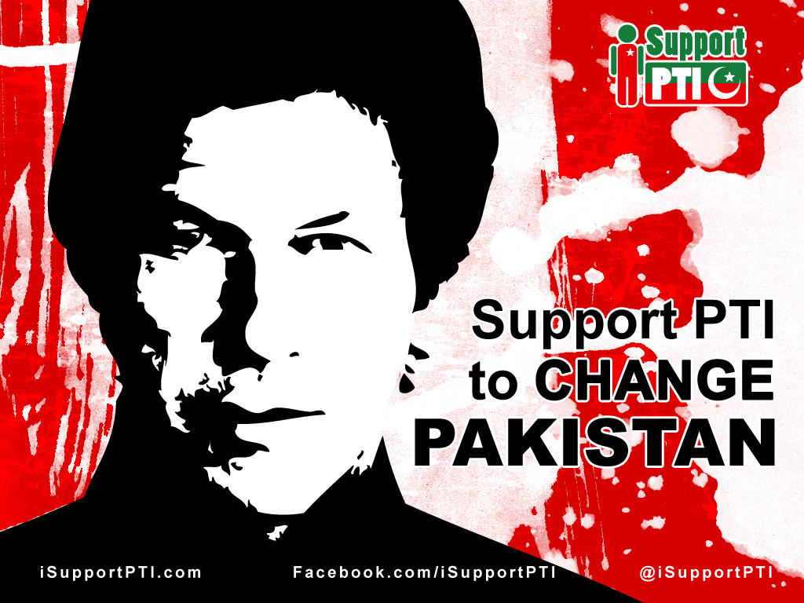

Imran Khan in politics
Initial days of Imran politics
In 1996, Khan founded a political party, Pakistan Tehreek-e-Insaf (PTI).Khan supported General Pervez Musharraf's military coup in 1999,believing Musharraf would "end corruption, clear out the political mafias". According to Khan, he was Musharraf's choice for prime minister in 2002 but turned down the offer.The 2002 Pakistani general election in October across 272 constituencies, Khan anticipated in the elections and was prepared to form a coalition if his party did not get a majority of the vote.He was elected from Mianwali.He has also served as a part of the Standing Committees on Kashmir and Public Accounts. On 6 May 2005, Khan was mentioned in Newsweek story about the alleged desecration of the Qur'an in a U.S. military prison at the Guantánamo Bay Naval Base in Cuba. In June 2007, Khan faced political opponent in and out side the parliament. On 2 October 2007, as part of the All Parties Democratic Movement, Khan joined 85 other MPs to resign from Parliament in protest of the presidential election scheduled for 6 October, which general Musharraf was contesting without resigning as army chief. On 3 November 2007, Khan was put under house arrest, after president Musharraf declared a state of emergency in Pakistan. Later Khan escaped and went into hiding. He eventually came out of hiding on 14 November to join a student protest at the University of the Punjab. At the rally, Khan was captured by students and was mistreated. On 30 October 2011, Khan addressed more than 100,000 supporters in Lahore, challenging the policies of the government, calling that new change a "tsunami" against the ruling parties, His another successful public gathering of 250,000 supporters was in Karachi on 25 December 2011. Since then Khan has become a real threat to the ruling parties and future political prospect in Pakistan. According to the International Republican Institute's (IRI's) survey, Imran Khan’s Pakistan Tehreek-e-Insaf (PTI) tops the list of popular parties in Pakistan both at the national and provincial level. On 6 October 2012, Khan joined vehicle caravan of protesters from Islamabad to the village of Kotai in Pakistan's South Waziristan region against U.S. drone missile strikes. On 23 March 2013, Khan introduced the "Naya Pakistan Resolution" (New Pakistan) at the start of his election campaign. On 29 April The Observer termed Khan and his party Pakistan Tehreek-e-Insaf as the main opposition to the Pakistan Muslim League-Nawaz. On 30 April 2013, Manzoor Wattoo president of Pakistan Peoples Party (Punjab) offered Khan the office of prime minister in the possible coalition government which would include the PPP and Khan's PTI, in a move to prevent Pakistan Muslim League-Nawaz to make the government, but offer was rejected. During the 1990s, Khan also served as UNICEF's Special Representative for Sports and promoted health and immunisation programmes in Bangladesh, Pakistan, Sri Lanka and Thailand.[82] While in London, he also works with the Lord's Taverners, a cricket charity.
